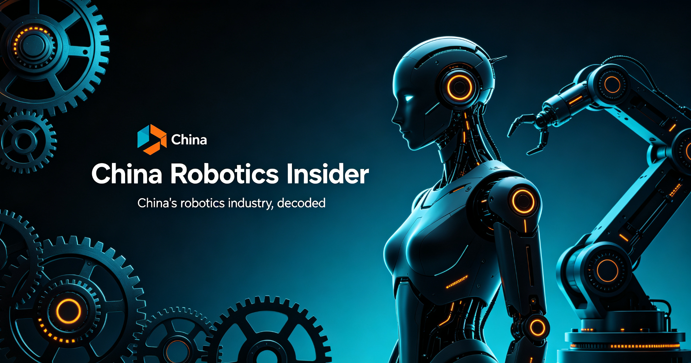

중국 내륙 허페이의 로봇 공장: 누가 생산을 옮겨왔고 무엇이 실제인가
Geek+, YouiBot, LimX Dynamics, X Square, KUKA 차이나가 나리오, BOE, 창신메모리의 베팅으로 알려진 내륙 도시에 기지를 열었다. 약 200개 로봇·임바디드 AI 기업이 모였지만, 목록은 완제품 공장, 모듈 공장, 통합 센터, 연구 사무소를 섞고 있다. 공급망과 정책이 실제로 제공하는 것과 아직 파일럿인 것을 구분한다.

중국 동부 안후이성 성도 허페이는 모델 두뇌·핵심 부품·온몸·현장 배치까지 이어지는 전 사슬을 커버하는 로봇·임바디드 지능 기업 약 200곳을 모았다고 밝힌다. 시 집계로 2025년 휴머노이드 생산은 400대를 넘었고 산업용 로봇은 2.2만 세트로 1.1배 늘었다. 지역 미디어 종합에 따르면 2024년 스마트 로봇 산출은 500억 위안을 넘는다. 대표적인 외부 유치 기업은 중량·고속 피킹 AMR의 글로벌 유일 생산기지이자 루장 제조 본부를 세운 Geek+(2590.HK), 그리고 페이둥에 본부와 스마트 제조 기지를 옮긴 YouiBot이다. 나머지로는 LimX Dynamics, EngineAI, Leju, X Square, Yiyou Zhikong, Weiyi, KUKA 차이나, 휴머노이드 합작사 Dingli Kesin이 있다. 솔직한 전제: 대부분 기업은 여전히 펀딩·샘플·소량 양산 단계이고, 일부 프로젝트는 관절 모듈을 만들거나 통합·조립을 하며 온몸 로봇을 만들지 않는다. 휴머노이드 양산은 중국 전역에서 아직 풀리지 못했다.
허페이는 해외 관찰자가 중국 로봇을 떠올릴 때 가장 먼저 생각하는 도시는 아니다. 선전은 하드웨어 공급망과 스타트업 본부 밀도를 갖췄고, 항저우에는 유니트리가 있으며, 베이징은 모델 랩과 연구소를, 상하이는 임바디드 AI 연구센터를 모은다. 허페이의 차이는 자동차, 가전, 디스플레이, 반도체를 키운 내륙 제조 도시가 이들 공장의 부품, 엔지니어, 열린 현장을 로봇 클러스터로 돌리려 한다는 점이다. 과거 니오, BOE, 창신메모리에 베팅한 방식 그대로다. 시 소유 자본이 초기에 들어가고 공급사가 뒤따르며, 보상은 한 분기가 아니라 십여 년 단위로 평가한다.
현재 추진의 숫자는 2026년 10월 시정부 제조업 종합 보도에 나온다. 약 200개 로봇·임바디드 기업이 '두뇌·소뇌·핵심 부품·온몸·현장 적용' 전 사슬을 커버하고, 2025년 휴머노이드 400대 이상, 산업용 로봇 2.2만 세트(1.1배 증가)를 냈다. 2026 세계제조업대회에서는 지역 로봇·임바디드 기업 20여 곳이 휴머노이드 13종을 선보였다.
두 개의 닻: Geek+와 YouiBot
가장 문서화가 잘 된 외부 유치는 사무소가 아니라 제조 기지를 도시로 옮긴 두 모바일 로봇 회사다.
Geek+(2590.HK)는 2022년 11월 허루 산업신도시 루장 프로젝트에 서명했고, 보도 기준 총투자 61억 위안, 2024년 11월 1단계가 양산에 들어갔다. 부지는 90무(약 7.2만 제곱미터)이며, 회사와 지방정부는 이곳을 중량 적재·고속 피킹 로봇의 글로벌 유일 생산기지로 설명하고, 연산 능력은 연 2만 대(세트)다. 완전 확장 후 설계 능력은 20만 대로도 언급된다. 지방정부 보도 기준 2025년 산출은 10.2억 위안이다. Geek+는 2025년 7월 홍콩 증시에 상장했고, 회사·미디어 자료로는 7년 연속 글로벌 AMR 점유율 1위로 나온다. 이 순위는 감사된 제3자 지표가 아니라 회사·미디어 주장이다.
YouiBot은 시안자오통대학 팀이 분사한 웨이퍼 이송·모바일 매니퓰레이션·검사 로봇 업체로, 2024년 11월 페이둥 경제개발구에 본부와 스마트 제조 센터를 열었다. 기지는 7,000제곱미터가 넘는 청정 생산 작업장을 갖추고 직원 약 400명 중 3분의 1 이상이 연구개발이며, 신제품 개발과 양산을 허페이에 두고 있다. 회사는 800여 개 현장 배치, 400여 글로벌 고객을 보유했다고 밝히고, 2024년 매출 기준 모바일 매니퓰레이션 로봇 글로벌 1위라고 자칭하는데, 이 역시 회사 귀속 순위다. 중국 미디어는 YouiBot이 IPO를 추진 중이라 보도하며, 홍콩 18C 신청을 언급하는 보도와 증권 등록 기록을 언급하는 보도가 섞여 있다. 거래소와 부문은 확정되지 않았으므로, 이 글은 상장사가 아니라 IPO 진행 중으로 본다.
나머지 목록: 관절 모듈, 휴머노이드 팀, 통합 센터
두 번째 유치 물결은 허페이 구역에 퍼져 있다. 시는 공간 배치를 '4+3'으로 부른다. 야오하이, 바오허, 수산, 하이테크존이 핵심 엔진이고 경제개발구, 페이둥, 루장이 뒷받침한다. 프로젝트가 실제로 만드는 물건은 크게 다르다.
| 기업 | 기원 | 허페이 위치 | 허페이 프로젝트 역할 | 상태 전제 |
|---|---|---|---|---|
| Geek+ | 베이징/선전; HKEX 2590.HK | 루장 허루 신도시 | 제조 본부; 중량·고속 피킹 AMR 글로벌 유일 기지; 연 2만 세트 | 2024년 11월 양산; 2025년 산출 10.2억 위안(지방정부) |
| YouiBot | 시안자오통대 팀 | 페이둥 경제개발구 | 본부+스마트 제조 기지, 7,000㎡ 이상 청정실; 웨이퍼 이송·모바일 매니퓰레이션·검사 | IPO 진행 중; 거래소·부문 미확정 |
| LimX Dynamics | 선전 | 바오허 구 | 지역 본부 겸 국가 스마트 제조 센터; 범용 휴머노이드·족식 로봇 온몸과 운동 제어 | 2026년 8월 서명; 생산 램프·납품량 미공개 |
| EngineAI | 선전 | 바오허 구 | PM01 경량 임바디드 기체, SA01 연구 플랫폼; 바오허에 생산 라인 개설 | 자회사 2024년 등록; 허페이 후속 납품 진전 미공개 |
| Leju Robotics | 선전 | 야오하이 구 | 산업용 휴머노이드 HQ 기지; 라인 체결·분류용 'Kuafu' 휴머노이드 | 2025년 현지 직원 규모 작음; 이후 제2 HQ 전략 협약 |
| X Square Robotics | 선전 | 하이테크존 | 연구개발·파일럿·납품·운영 순환 본부; 임바디드 모델+온몸; 투자 약 3억 위안 | 2026 세계제조업대회 제품 공개; 물량 주문 미공개 |
| Yiyou Zhikong | 상하이 장장강, 2018년 설립 | 하이테크존 | 관절 모듈 기지 약 2,100㎡; 서보 관절, 하모닉·유성·직선 모듈 암; 연 약 2,000개 암 계획 | 온몸이 아닌 부품 모듈; 2026년 11월 16일 개업 |
| Weiyi Technology | 상하이 | 바오허 구 | 핵심 부품 생산; 관절 모듈 라인, 휴머노이드 양팔·온몸 솔루션 | 부품 프로젝트; 2026년 7월 서명 |
| KUKA 차이나 | 독일 기원, 미디어 소유 | 하이테크존 | 스마트 제조 혁신센터: 유연 시스템 설계·연구개발·조립·통합; 2027년 생산 목표, 첫해 산출 목표 10억 위안 | 표준 로봇 온몸 생산능력은 순더에 유지; 허페이는 엔지니어링 통합·조립 |
| Dingli Kesin 합작사 | Zhongding Shares + LimX + Flexbot | 바오허 구 | 휴머노이드 온몸, 모터, 하모닉 감속기, 센서, 관절 조립체, 전자 피부; 연 3,000대 계획 | 2026년 3월 첫 완전체 휴머노이드 출고; 2026년 10월 약 200대 납품 합작사 보도 |
출처: 허페이·구역 정부 발표, People's Daily 안후이, 차이나뉴스 안후이, 더페이퍼, 기업 자료. 분류는 편집적 판단이며, 능력·점유율 숫자는 감사 공시가 없는 한 회사 또는 지방정부 주장이다.
Dingli Kesin 합작사는 가장 명확한 현지 온몸 베팅으로 별도로 짚을 만하다. 46년간 실링 부품을 만든 안후이 자동차 부품사 Zhongding Shares는 2026년 2월 바오허에 입지했고, 합작사는 Zhongding 부품 사업, LimX 휴머노이드 제어, Flexbot 전자 피부를 묶는다. 첫 완전체 휴머노이드는 현지 보도로 서명 약 23일 만인 2026년 3월 라인에서 내려왔고, 연 3,000대 능력 계획에 2026년 10월까지 약 200대를 납품했다. 상장 모회의 허페이 로봇·부품 센터는 총투자 약 12억 위안으로 보도된다. 자동차 부품사가 로봇 온몸 제조사로 전환하는 사례로, 허페이 공급망이 반복하려는 패턴이다.
허페이가 실제로 제공하는 것
기존 부품의 파생 활용. 시는 6개 완성차 업체와 가전·디스플레이 공급망이 칩 모듈, 센서, 모터, 배터리, 제어기를 로봇 쪽으로 확장하도록 유도한다. 자동차 부품과 로봇 부품의 절반 이상이 공유된다는 설명이며, 니오, 폭스바겐 안후이, BYD, BOE와 그 협력사가 로봇 부품으로 돌아설 수 있다. 시는 100개 이상 로봇·임바디드 현장 기회 목록을 내놓고 약 100개 기업을 매칭했다.
국가 자본과 정책 패키지. 2025년 3월 '6128' 프로그램은 1년에 60개 OEM 공급망을 열고 100개 기업의 병목을 해결하며 화웨이·이펠리테크 두 모델 두뇌를 연결하고 8개 현장 세로축을 다루는 것을 목표로 한다. 100억 위안 미래산업 펀드, 3년간 20억 위안 공공 서비스 플랫폼, 매년 1억 위안 특별 보조금을 설정했다. 허페이 시 산투자는 Lingdong General, YouiBot, Zerith에 투자했고, 싱타이 지주사는 6개 임바디드 프로젝트를 유치해 21.7억 위안 계약을 맺었다. 성 차원에서는 안후이 '십백천' 계획이 10개 이상 국내 선두 기업, 100개 이상 핵심 기술·대표 제품, 2027년 전 사슬 매출 1,000억 위안을 목표로 하며, 2026년 성 의견은 2030년까지 허페이·우후를 산업용 로봇 국내 선두권, 휴머노이드 첫 티어로 놓는 것을 겨냥한다.
플랫폼과 훈련장. 허페이는 USTC 휴머노이드 연구원, 장쟝후이 전방기술 혁신센터(Jianghuai Lab) 등 10대 연구개발 플랫폼을 운영한다. 시 산투자가 6.23억 위안을 들인 야오하이 임바디드 AI 공공 훈련장은 가정·슈퍼마켓·공업 현장 33종 시나리오를 1:1로 재현하고 83대 훈련 로봇을 둔다. 현지 부품사도 함께 자리한다. 페이시 인근 Zhongke Lingxi는 링크·케이블 구동·직접 구동 세 갈래로 1,000세트 이상 그리핑 핸드를 출하했고, Flexbot은 전자 피부를, Sailisi는 C0 등급 초소형 볼스크류·유성 롤러 스크류를, Zhongding Ruisibo는 하모닉 감속기·6축 힘센서를 납품하며 휴머노이드 고객 설계 지정을 받았다.
현지 토종과 모델층. 토종 명단에는 USTC·Jianghuai Center와 함께 육성한 Zerith Robotics가 있고, Zerith-H1 'Xiaomai'로 거리 상점을 지킨다. 회사는 2026년 로봇 점포 500개, 이듬해 2,000개를 계획하지만 이는 납품 실적이 아니라 목표다. 이펠리테크가 깊게 육성한 Lingdong General은 LDB01로 하이테크존 기준 중국 첫 산업용 임바디드 로봇 CR 인증을 받고 이후 EU CE-MD를 취득했다. 현지 상장 창고 자동화사 Jingsong Intelligent(688251.SH)는 2025년 로봇 사업 매출을 71% 늘렸고, Heli와 Heli Yefeng은 Jianghuai Center와 AGV·휠레그 휴머노이드 물류기를 만들며, Juyi Technology는 실험실과 자동차 조립 로봇을 협업한다. 두뇌층에서는 이펠리테크 Spark X2와 HiDream.ai 월드 모델이 현지 시뮬레이션과 훈련을 뒷받침한다.
아직 증명되지 않은 것
클러스터 헤드라인 숫자는 대부분 기업이 실제 어디에 서 있는지와 함께 읽어야 한다. 시와 미디어 리뷰는 약 200개 기업 대부분이 여전히 펀딩·샘플 납품·소량 양산 단계라고 묘사하며, 휴머노이드 양산은 국가 차원에서 아직 풀리지 못했다. 해외 독자가 짚어야 할 구분은 세 가지다.
첫째, 프로젝트 유형이다. KUKA 허페이 센터는 유연 시스템 설계·연구개발·조립·통합을 하고 표준 로봇 온몸은 여전히 순더에서 만든다. Yiyou Zhikong과 Weiyi는 관절 모듈과 부품 암을 만들며 온몸을 만들지 않는다. 다른 일부는 연구개발·파일럿·납품 센터이지 고생산량 공장이 아니다. 서명 협약이나 등록 현지 자회사가 대량 생산 라인을 의미하지는 않는다.
둘째, 공개된 납품이다. YouiBot의 IPO 경로는 확정되지 않았고, EngineAI 허페이 PM01 납품 진전은 공개 업데이트가 없다. 여러 부품 공급사는 출하 단위가 아니라 능력과 계획 생산량을 말한다. 가장 깨끗한 증거는 공시된 연산, 납품 대수, 이름 붙은 고객, 인증된 해외 배치다.
셋째, 베팅 자체가 장기물이다. 허페이의 이전 베팅 니오·BOE·창신메모리는 십여 년 만에 보상을 냈다. 이번 로봇 클러스터가 다음 티어 리더를 키울지는 2026년 산출만으로는 답할 수 없다. 자동차 부품 전환 이야기와 창고 AMR 기지가 휴머노이드 온몸 이야기보다 더 앞서 있다.
다른 중국 로봇 클러스터와의 위치
중국 로봇 기반을 지도하는 투자자·부품사·애널리스트에게 허페이는 모델 설계 클러스터가 아니라 내륙 제조·자본 클러스터로 들어간다. 선전·둥관은 가장 촘촘한 부품 체인과 스타트업 필드를, 항저우는 유니트리와 하드웨어 인접 AI 기업을, 베이징은 모델 랩·연구소·정책 자리를, 상하이는 임바디드 AI 연구센터와 해외 배후 통합업체를 가진다. 허페이의 강점은 저비용 내륙 제조, 맞춤 자동차·가전 부품 기반, 열린 현장, 초기에 체크를 끊는 시 자본이다. 약점은 모델 리더십, 해외 서비스 채널, 전 국가 섹터가 아직 못 가진 검증된 휴머노이드 매출이다.
지켜볼 것
- Dingli Kesin 납품 램프. 연 3,000대 계획 능력이 이름 붙은 고객과 재주문으로 이어지는지, 상장 모회가 로봇 부문 매출을 별도 공시하는지.
- YouiBot IPO. 어느 거래소·부문에 신청서를 내는지, 공개된 반도체·에너지 고객이 반복적 모바일 매니퓰레이션 매출로 바뀌는지.
- KUKA 차이나 2027 센터. 허페이 혁신센터가 첫해 산출 목표에 도달하는지, 현지 폭스바겐 안후이 관계가 KUKA 통합 주문으로 이어지는지.
- 클러스터 전체 휴머노이드 산출. LimX, EngineAI, X Square, Leju의 발표 능력과 납품 대수 간 차이. 런데이 주장보다 구역·시 정부 공시를 본다.
- 현지 부품 스케일업. 페이시·바오허·하이테크존의 그리핑 핸드, 스크류, 전자 피부, 힘센서사가 현지 합작사 하나가 아닌 여러 휴머노이드 고객에 납품하는지.
자주 묻는 질문
로봇 기업이 왜 허페이로 옮기나?
허페이는 모터·센서·제어기·배터리 모듈을 로봇에 재활용할 수 있는 기존 자동차·가전·디스플레이 공급망, 초기 투자하는 산투·100억 위안 미래 펀드, 열린 현장과 6.23억 위안 훈련장을 함께 제공한다. 과거 니오·BOE·창신메모리 베팅은 제조 클러스터를 십여 년 단위로 키운 트랙레코드다.
허페이는 이미 휴머노이드 양산 허브인가?
아니다. 시 집계로 2025년 휴머노이드 400대 이상, 산업용 로봇 2.2만 세트지만 약 200개 기업 대부분은 여전히 펀딩·샘플·소량 단계다. 휴머노이드 양산은 중국 전역에서 아직 풀리지 못했고, 허페이 일부 프로젝트는 모듈 공장·통합 센터·연구 사무소이지 온몸 공장이 아니다.
어느 상장 로봇사가 허페이에 기지를 두고 있나?
Geek+(2590.HK)가 루장 제조 본부와 중량·고속 피킹 로봇 글로벌 유일 생산기지를 운영한다. Jingsong Intelligent(688251.SH)는 현지 상장 창고 자동화사다. 미디어 그룹 KUKA 차이나는 2026년 11월 스마트 제조 혁신센터를 서명했지만 표준 온몸 생산능력은 순더에 남았다. YouiBot은 IPO를 추진 중이며 거래소·부문은 미확정이다.
진짜 허페이 로봇 공장은 어떻게 구분하나?
발표에는 완제품 공장(Geek+, Dingli Kesin 합작사), 부품 공장(Yiyou, Weiyi, Zhongke Lingxi), 엔지니어링 통합·조립 센터(KUKA 차이나), 연구개발·파일럿·납품 센터 네 유형이 섞여 있다. 검증된 능력·연산·납품 대수가 계약서와 대량 생산 공장을 나누는 기준이다.
출처
- 허페이시 정부 / 허페이데일리 — 약 200개 로봇·임바디드 기업; 2025년 휴머노이드 400대 이상·산업용 로봇 2.2만 세트, 2026-10-17
- 허페이 경제정보화국 — 야오하이 임바디드 AI 훈련장 내부
- 안후이성 과학기술청 / 신화 안후이 — 그리핑 핸드가 임바디드 산업을 여는 방식
- 허페이 하이테크존 — X Square 본부·마그나 프로젝트 서명
- 바오허구 정부 — LimX Dynamics 지역 본부 겸 국가 스마트 제조 센터
- 허페이 하이테크존 — KUKA 스마트 제조 혁신센터 입지
- 허페이 하이테크존 — Yiyou 임바디드 로봇 모듈 생산기지 개업
- People's Daily 안후이 — 바오허: 휴머노이드 체인에 새 이름 등장, 2026-11-12
- People's Daily 안후이 — 바오허, 휴머노이드 클러스터 조성, 2026-11-03
- 차이나뉴스 안후이 — Zhongding Shares 첫 휴머노이드 로봇 출고, 2026-03-16
- 더페이퍼 — '루장 제조' 글로벌로: Geek+ 공급망 기지
- 루장현 정부 — Geek+ 홍콩 증시 본보기 상장
- 페이둥현 정부 — YouiBot 로봇 페이둥 개업
- CNR 안후이 — 허페이 100억 위안 미래산업 펀드 계획; 6128 프로그램·서명 프로젝트, 2025-04-01
- 안후이성 정부 — 로봇 산업 고품질 발전 실시의견, 2026년 제9호
- 허페이 하이테크존 — Lingdong General LDB01 중국 첫 산업용 임바디드 로봇 CR 인증